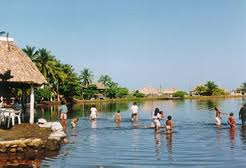
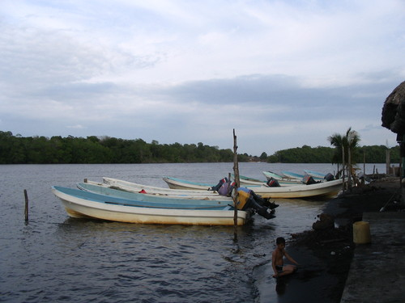
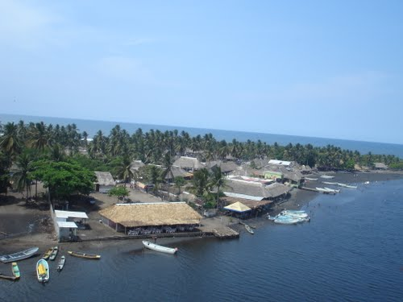
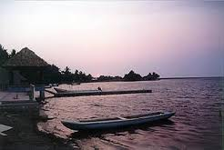
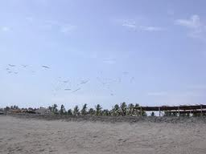

Un bonito y relajante lugar que cuenta con cabañas para disfrutar de un fin de semana, donde podra admirar su ambiente natural y pasar un fin de semana tranquilo.
Cuenta con recorridos de lancha por el estero y criaderos de camarones y mojarra tilapia.
Localizada a 27 kilometros de la cabecera municipal de Mazatan por un camino de terraceria que conduce hasta este lugar.
Partiendo de Tapachula:
Ubíquese en la calle 19ª Pte. gire a la derecha y se convierte en Internacional – continúe por Tapachula-Juchitán de Zaragoza/México 200 – gire a la izquierda con dirección a Chiapas Álvaro Obregón-Mazatan – a la derecha hacia Matías de Córdova Pte. – Continúe por Carretera Federal Mazatan –Barra San José – hasta llegar a Barra San José.
Puede practicar diferentes actividades como las actividades al ambiente natural como lo son costas / playas.
Deportes acuaticos, como el buceo y la pesca deportiva.
Actividades vinculadas al patrimonio historico-cultural como la gastronomia.





posicione el mouse sobre las imagenes